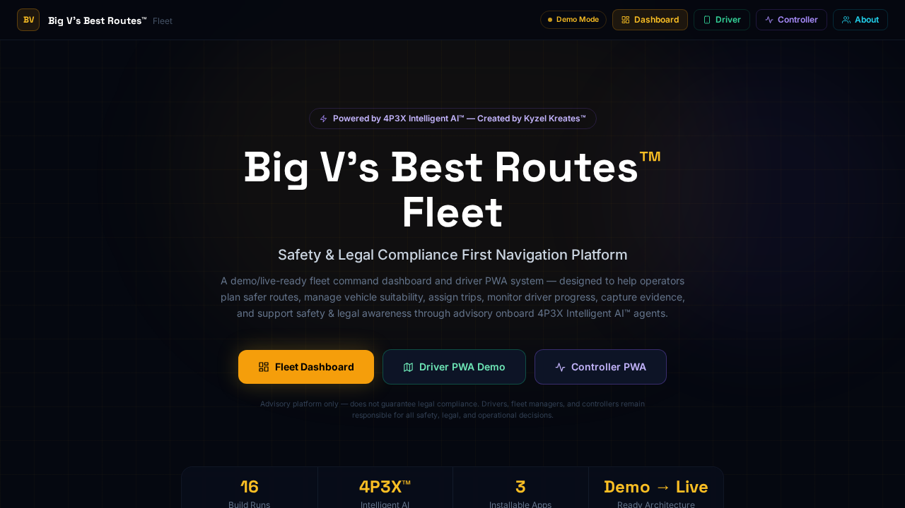

Demo Mode shows the product. Live Mode runs the product — once connected to a real backend, authentication, persistent records, and real-time sync.
What it is
Big V's Best Routes™ Fleet OS is a safety-first fleet routing and vehicle-aware navigation platform — designed to help fleet operators plan safer routes, reduce avoidable incidents, manage vehicle suitability, and support driver compliance awareness through an advisory AI layer.
Where it can be used
Transport companies, logistics operators, council fleet departments, specialist vehicle operators (HGVs, mobile cranes, abnormal loads), delivery networks, and emergency response vehicle fleets.
Why it was built
Bridge strikes, weight limit violations, and route compliance failures cost the UK industry hundreds of millions annually. This product demonstrates how technology can support better route planning decisions — even without real-time infrastructure data.
When it is useful
When fleet managers need to assign routes to specific vehicle types, track driver progress, flag compliance risks, and manage fleet operations from a single dashboard.
Who it helps
Fleet managers, transport controllers, logistics coordinators, compliance officers, and drivers needing route guidance.
How it works
Features a Fleet Dashboard for route assignment, vehicle profile management, driver oversight, and compliance reporting — plus a Driver PWA for turn-by-turn guidance, check-ins, and evidence capture, and a Controller PWA for supervisory oversight.
Key features
Architecture behind it
Refactored from the 4P3X base with fleet-sector identity, vehicle/driver/controller three-way split, route data model, and map layer integration points.
Demo Mode to Live Mode pathway
Demo Mode shows all fleet workflows with sample routes and vehicle profiles. Live Mode integrates with real mapping APIs (GraphHopper, OSM/MapLibre), vehicle databases, and live driver tracking. This is an advisory platform only — does not guarantee legal compliance. Drivers and operators remain responsible for all safety, legal, and operational decisions.
What it can become next
Could integrate with national bridge and weight restriction databases, live traffic data, telematics systems, and fleet management platforms like Samsara or Verizon Connect.
Investor and employer relevance
A commercially significant product demonstrating the creator's ability to tackle safety-critical, compliance-aware markets — with real-world commercial potential in a multi-billion pound sector.
📋 Advisory notice
Big V's Best Routes Fleet OS™ is an advisory platform only. It does not guarantee legal compliance, route legality, or vehicle suitability. Drivers, fleet managers, and controllers remain responsible for all safety, legal, and operational decisions.